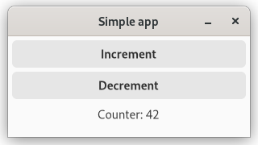

Your first app
For our first app, let's create something original: a counter app.
| GTK Light | GTK Dark |
|---|---|
|  |  |
| Adwaita Light | Adwaita Dark |
|---|---|
 |  |
In this app, we will have a counter which can be incremented and decremented by pressing the corresponding buttons.
The app we will write in this chapter is also available here. Run
cargo run --example simple_manualfrom the example directory if you want to see the code in action.
Application architecture
Often, programming concepts are easier to understand when explained with examples or metaphors from the real world. To understand how Relm4 apps work, you can think about a computer as a person.
Our job as a programmer is to ensure that the users of our app will be able to communicate with the computer through the UI. Since the computer can't understand our human language, it needs some help from us to get the communication going.
Let's have a look at what we need to get this done!
Messages
For our app, we just want to tell the computer to either increment or decrement a counter.
enum AppInput {
Increment,
Decrement,
}The model
For our counter app, the computer only needs to remember the counter value, so an u8 is all we need.
struct AppModel {
counter: u8,
}The widgets
GTK4 offers the computer widgets that allow it to take input and to respond. Widgets are simply parts of an UI like buttons, input fields or text areas. To be able to update the widgets in our program, we can put them all into a struct.
For our application, we use a window with two buttons to increase and decrease the counter and a label to display the counter value. We also need a box as a container to house our buttons and label, since a window can only have one child.
In our case, we will only update the label when we increment or decrement the counter, so we don't really need to store everything inside the struct.
struct AppWidgets {
label: gtk::Label,
}Although, if you want to, you can.
Implement a component with SimpleComponent.
The last step we need is to tell the computer how to initialize and update the widgets.
All that is left to do is to implement the SimpleComponent trait for your model, which tells the computer exactly how to visualize its memory.
Let's do this step by step. First, we'll have a look at the beginning of the trait impl.
impl SimpleComponent for AppModel {The first thing you need to do is to define some generic types necessary to make our component work.
/// The type of the messages that this component can receive.
type Input = AppInput;
/// The type of the messages that this component can send.
type Output = ();
/// The type of data with which this component will be initialized.
type Init = u8;
/// The root GTK widget that this component will create.
type Root = gtk::Window;
/// A data structure that contains the widgets that you will need to update.
type Widgets = AppWidgets;The types defined in the trait tell our component how it should communicate with other components and what type of widgets should be produced.
The Root type is the outermost widget of the app. Components can choose this type freely, but the main component must use a Window.
Since the window widget is our root widget, we are going to create it in the init_root function.
fn init_root() -> Self::Root {
gtk::Window::builder()
.title("Simple app")
.default_width(300)
.default_height(100)
.build()
}Next up, we want to initialize our UI and the model.
Don't worry about the amount of manual code you need for handling widgets. In the next chapter, we'll see how this can be done easier.
All of these widgets will be created in the init function. We get our Root window and the Init variables to create our widgets with.
/// Initialize the UI and model.
fn init(
counter: Self::Init,
window: &Self::Root,
sender: ComponentSender<Self>,
) -> relm4::ComponentParts<Self> {
let model = AppModel { counter };
let vbox = gtk::Box::builder()
.orientation(gtk::Orientation::Vertical)
.spacing(5)
.build();
let inc_button = gtk::Button::with_label("Increment");
let dec_button = gtk::Button::with_label("Decrement");
let label = gtk::Label::new(Some(&format!("Counter: {}", model.counter)));
label.set_margin_all(5);
window.set_child(Some(&vbox));
vbox.set_margin_all(5);
vbox.append(&inc_button);
vbox.append(&dec_button);
vbox.append(&label);
inc_button.connect_clicked(clone!(@strong sender => move |_| {
sender.input(AppInput::Increment);
}));
dec_button.connect_clicked(clone!(@strong sender => move |_| {
sender.input(AppInput::Decrement);
}));
let widgets = AppWidgets { label };
ComponentParts { model, widgets }
}First, we initialize each of our widgets, mostly by using builder patterns.
Then we connect the widgets so that GTK4 knows how they are related to each other. The buttons and the label are added as children of the box, and the box is added as the child of the window.
Next, we connect the "clicked" event for both buttons and send a message from the closures to the computer. To do this, we only need to move a cloned sender into the closures and send the message. Now every time we click our buttons, a message will be sent to update our counter!
Of course, the computer needs to do more than just remembering things, it also needs to process information. Here, both the model and message types come into play.
The update function of the SimpleComponent trait tells the computer how to process messages and how to update its memory.
fn update(&mut self, message: Self::Input, _sender: ComponentSender<Self>) {
match message {
AppInput::Increment => {
self.counter = self.counter.wrapping_add(1);
}
AppInput::Decrement => {
self.counter = self.counter.wrapping_sub(1);
}
}
}
wrapping_add(1)andwrapping_sub(1)are like+1and-1, but don't panic on overflows.
We see that the update function receives a message and updates the model according to your instructions.
Still our UI will not update when the counter is changed. To do this, we need to implement the update_view function that modifies the UI according to the changes in the model.
/// Update the view to represent the updated model.
fn update_view(&self, widgets: &mut Self::Widgets, _sender: ComponentSender<Self>) {
widgets
.label
.set_label(&format!("Counter: {}", self.counter));
}Running the App
The last step is to run the app we just wrote. To do so, we just need to initialize our model and pass it into RelmApp::new().
fn main() {
let app = RelmApp::new("relm4.test.simple_manual");
app.run::<AppModel>(0);
}🎉 Congratulations! You just wrote your first app with Relm4! 🎉
Summary
Let's summarize what we learned in this chapter.
A Relm4 application has three important types:
- The model type that stores the application state, the memory of our app.
- The message type that describes which information can be sent to update the model.
- The widgets type that stores our widgets.
Also, there are two important functions:
updatereceives a message and updates the model accordingly.update_viewreceives the updated model and updates the widgets accordingly.
The app does all those things in a loop. It waits for messages and once a message is received, it runs update and then view.

Relm4 separates the data and the UI. The UI never knows which message was sent, but can only read the model. This might seem like a limitation, but it helps you to create maintainable, stable and consistent applications.
Conclusion
I hope this chapter made everything clear for you :)
If you found a mistake or there was something unclear, please open an issue here.
As you have seen, initializing the UI was by far the largest part of our app, with roughly one half of the total code. In the next chapter, we will have a look at the relm4-macros crate, which provides a macro that helps us reduce the amount of code we need to implement the Widgets trait.
As you might have noticed, storing
inc_button,dec_buttonandvboxin our widgetsstructis not necessary because GTK will keep them alive automatically. Therefore, we can remove them fromAppWidgetsto avoid compiler warnings.
The complete code
Let's review our code in one piece to see how all these parts work together:
use gtk::glib::clone;
use gtk::prelude::{BoxExt, ButtonExt, GtkWindowExt};
use relm4::{gtk, ComponentParts, ComponentSender, RelmApp, RelmWidgetExt, SimpleComponent};
struct AppModel {
counter: u8,
}
#[derive(Debug)]
enum AppInput {
Increment,
Decrement,
}
struct AppWidgets {
label: gtk::Label,
}
impl SimpleComponent for AppModel {
/// The type of the messages that this component can receive.
type Input = AppInput;
/// The type of the messages that this component can send.
type Output = ();
/// The type of data with which this component will be initialized.
type Init = u8;
/// The root GTK widget that this component will create.
type Root = gtk::Window;
/// A data structure that contains the widgets that you will need to update.
type Widgets = AppWidgets;
fn init_root() -> Self::Root {
gtk::Window::builder()
.title("Simple app")
.default_width(300)
.default_height(100)
.build()
}
/// Initialize the UI and model.
fn init(
counter: Self::Init,
window: &Self::Root,
sender: ComponentSender<Self>,
) -> relm4::ComponentParts<Self> {
let model = AppModel { counter };
let vbox = gtk::Box::builder()
.orientation(gtk::Orientation::Vertical)
.spacing(5)
.build();
let inc_button = gtk::Button::with_label("Increment");
let dec_button = gtk::Button::with_label("Decrement");
let label = gtk::Label::new(Some(&format!("Counter: {}", model.counter)));
label.set_margin_all(5);
window.set_child(Some(&vbox));
vbox.set_margin_all(5);
vbox.append(&inc_button);
vbox.append(&dec_button);
vbox.append(&label);
inc_button.connect_clicked(clone!(@strong sender => move |_| {
sender.input(AppInput::Increment);
}));
dec_button.connect_clicked(clone!(@strong sender => move |_| {
sender.input(AppInput::Decrement);
}));
let widgets = AppWidgets { label };
ComponentParts { model, widgets }
}
fn update(&mut self, message: Self::Input, _sender: ComponentSender<Self>) {
match message {
AppInput::Increment => {
self.counter = self.counter.wrapping_add(1);
}
AppInput::Decrement => {
self.counter = self.counter.wrapping_sub(1);
}
}
}
/// Update the view to represent the updated model.
fn update_view(&self, widgets: &mut Self::Widgets, _sender: ComponentSender<Self>) {
widgets
.label
.set_label(&format!("Counter: {}", self.counter));
}
}
fn main() {
let app = RelmApp::new("relm4.test.simple_manual");
app.run::<AppModel>(0);
}